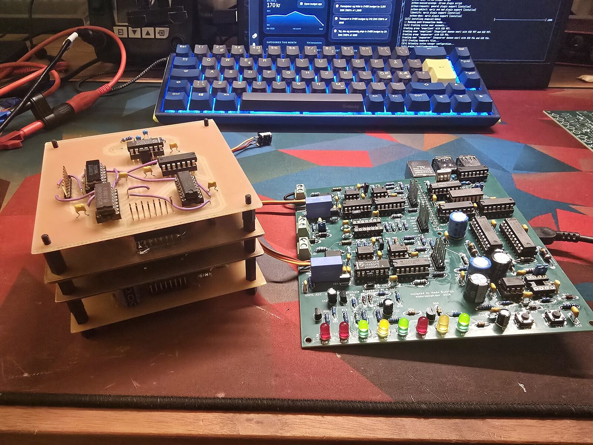
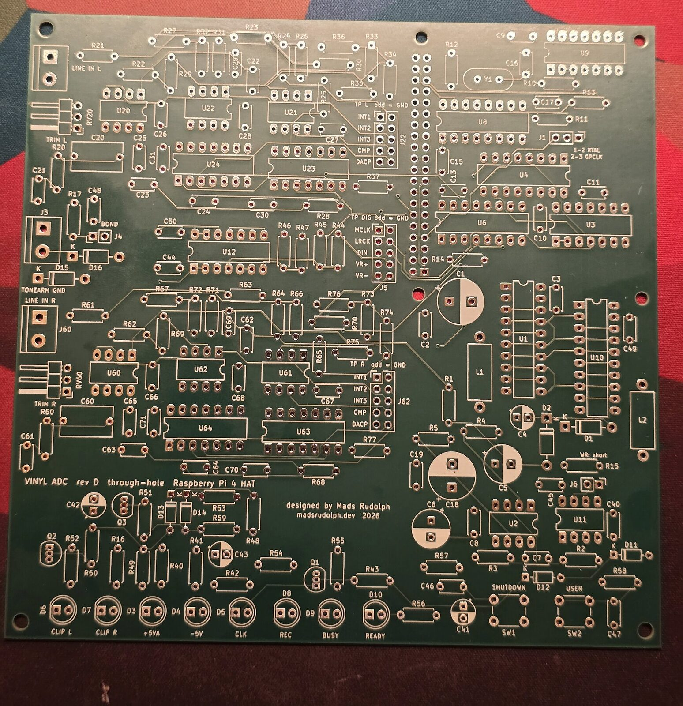
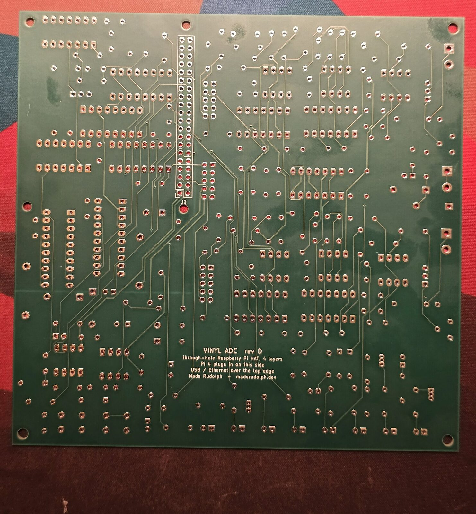
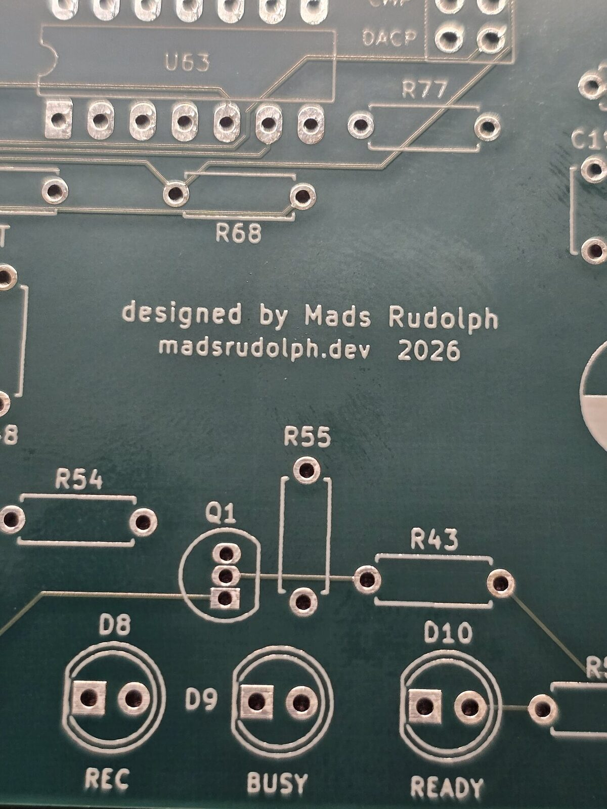
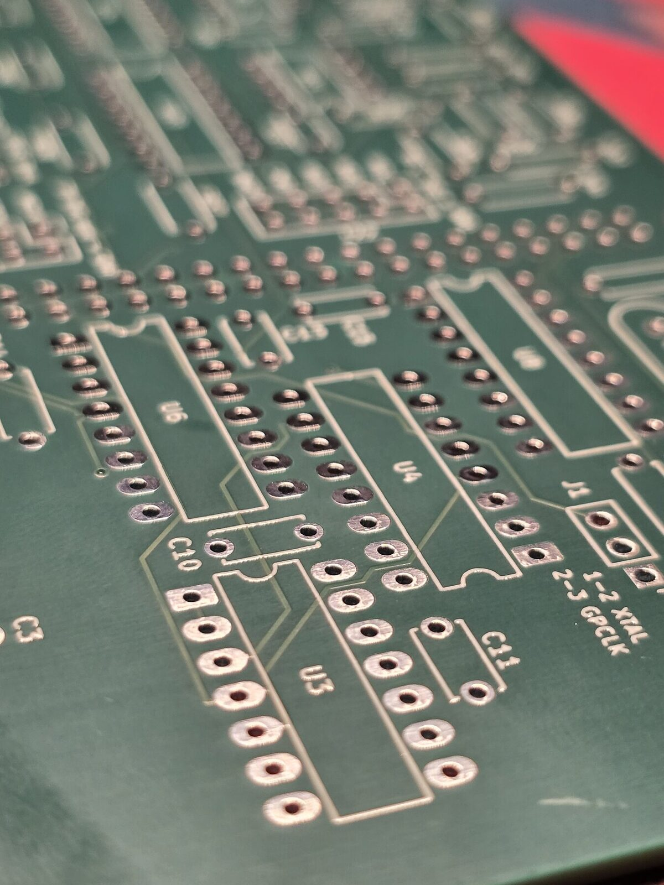
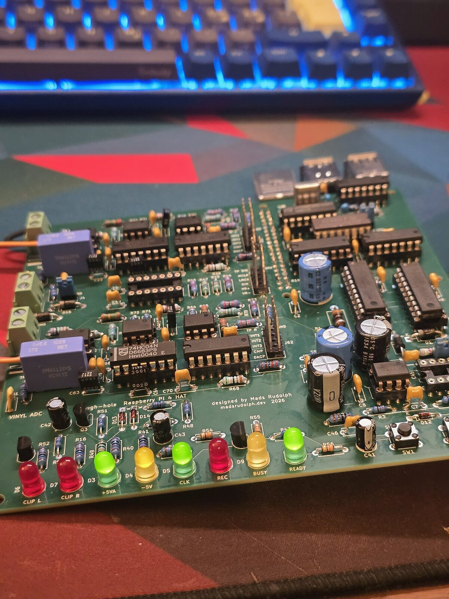

REV D · 20 OCTOBER 2026 · BOARDS SPONSORED BY PCBWAY
From four milled boards to one four-layer HAT.
One board, four layers, made by PCBWay, and the best-measuring version of this converter so far. Every Vinyl ADC board before it was isolation-milled, single-sided, at the university workshop. When PCBWay offered to sponsor the fabrication, the converter could be drawn the way a mixed-signal circuit wants to be: one board, a solid ground plane, plated holes everywhere, and the Raspberry Pi plugged in underneath. Thank you, PCBWay.




What PCBWay made
| Rev D, per board | |
|---|---|
| Stack-up | 4 layers: signals, solid GND plane, split +5V/+5VA, signals. 1.6 mm FR-4, 1 oz copper |
| Finish | solder mask both sides, white silkscreen, HASL lead-free |
| Holes | 649 plated barrels: 636 through-holes and 13 vias, on each of five boards |
| Routing | 1,020 tracks, the narrowest 0.25 mm; drills from 0.4 mm to 2.7 mm |
| Legends | 184 reference designators at 1 mm text height, the smallest labels 0.8 mm |
| Parts | 184, all through-hole, ICs socketed |


Why a fab board, for a converter
A real ground plane. The modulator switches at 1.536 MHz next to integrators that resolve microvolts. On one milled layer, ground was whatever copper was left between tracks; on rev D a whole inner layer is ground, directly under every signal, and a large part of the improvement measured below is owed to it.
Plated holes. Every joint is soldered from one side and the barrel carries it through. The September fault that cost the most time, a −5 V rail that reached one board only through solder wicked up an unplated hole, cannot exist on this board.
Repeatability. Five identical boards. Every milled board was a one-off.
What changed
| Milled stack (Sept 2026) | Rev D by PCBWay (Oct 2026) | |
|---|---|---|
| Boards | 4 × 100 × 100 mm on a 16-pin bus | 1 × 140 × 136 mm Raspberry Pi HAT |
| Copper | 1 layer, milled, bare | 4 layers with a solid ground plane |
| Links | dozens of hand-soldered wire jumpers | none: plated through-holes and vias |
| Finish | none | solder mask both sides, silkscreen, HASL lead-free |
| Power for best figures | bench supply; the Pi's 5 V cost 6–11 dB | the Pi's 5 V, analog island behind its own choke |
| Bring-up | two days, two hidden faults in one channel | both channels healthy and matched at the first capture |
Measured: milled against fabricated
The same measurement on both builds: stylus up, platter stopped, the same turntable and phono stage, the levels set so music peaks at about −6 dBFS, ten seconds of the ripper's own 48 kHz output. Left / right.
| 20 Hz–20 kHz | Milled stack · bench supply · crystal clock | Rev D · Pi 5 V · Pi clock |
|---|---|---|
| Idle floor, A-weighted | −61.1 / −62.1 dBFS | −69.7 / −68.2 dBFS |
| Idle floor, 200 Hz–2 kHz | −68.6 / −69.4 dBFS | −73.7 / −73.6 dBFS |
| Idle floor, 2–20 kHz | −59.6 / −60.6 dBFS | −76.5 / −70.5 dBFS |
| Music peak to floor, A-weighted | 54.2 / 55.2 dB | 63.7 / 62.2 dB |
| Music peak to floor, unweighted | 48.9 / 49.2 dB | 51.4 / 51.3 dB |
About 8 dB more A-weighted range from the groove to the file, and a floor 5–17 dB lower everywhere above 200 Hz.
Rev D was measured on the Raspberry Pi's supply, which cost the milled stack the most, and, at the time, on the Pi's fractional-divider clock (about 1 ns of jitter) because the crystal had a bad joint. What is left in the unweighted figure is 50 Hz hum common to both channels: the turntable's grounding, not the converter.



Bring-up
The milled stack took two days and two faults that hid each other before its right channel modulated. On rev D both channels were healthy, and matched, on the first capture. The order went in as a normal PCBWay order from the Gerbers, with the copper layer order in the remarks for their engineers.
The one rev D fault found so far is mine, not the fab's: the clip-LED comparators' inputs are swapped in the schematic, so both CLIP LEDs light permanently. The board runs with that comparator out of its socket meanwhile, and the fix is two resistors on the underside. Details in the rev D bring-up log.
On the bench, with its own crystal
Analog Discovery 3 generator into the input, the other input shorted, Pi supply.
| Milled stack, best channel | Rev D, left | Rev D, right | |
|---|---|---|---|
| Dynamic range (AES17, A-weighted) | 67.9 dB | 78.7 dB | 72.2 dB |
| THD at −6 dBFS | 0.03 % | 0.019 % | 0.052 % |
| Crosstalk | −92.4 dB | −97.8 dB | −85.8 dB |
| Response, 20 Hz–16 kHz | ±0.06 dB | −0.30 / +0.08 dB | −0.33 / +0.08 dB |
The left channel is 11 dB better than anything the milled boards reached, and 10 dB past the ~68 dB the design was simulated for. The right channel carries an extra in-band floor that the milled stack's right channel had too; it is traced to the right modulator's own loop and is next on the list.
Boards sponsored by PCBWay: thank you for making the best version of this project possible. Design files, Gerbers and every measurement: github.com/MadsRudolph/vinyl-adc.